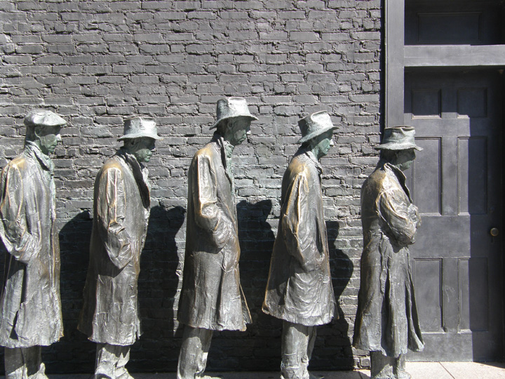

During the 1990s, the US crime rate declined precipitously.David L. Altheide, Creating Fear: News and the Construction of Crisis (New York: Walter de Gruyter, 2002). Yet the amount of coverage of crime in the news media increased dramatically. Crime shows filled television. Hollywood films moved from a liberal to a conservative image of law.Timothy O. Lenz, Changing Images of Law in Film & Television Crime Stories (New York: Peter Lang, 2003). The media broadened what is considered “criminal behavior.”Elayne Rapping, Law and Justice as Seen on TV (New York: New York University Press, 2003). This abundance of fictional depictions and factual reports framed crime as a threat, increased the public’s fear, and primed crime as a problem demanding a response from policymakers.
Public officials designed tough policies to stop this imagined outbreak of crime. These included treating juvenile offenders like adults, instituting mandatory minimum and longer sentences, the imposition of a lengthy prison term after a third conviction no matter how minor the crime (the catchy “three strikes” provision), and increasing the number of offenses subject to the death penalty.Sara Sun Beale, “The News Media’s Influence on Criminal Justice Policy: How Market-Driven News Promotes Punitiveness,” William and Mary Law Review 48, no. 2 (2006): 397–480. These policies made little sense to experts as ways of preventing crime. They also cost a lot of money: California spent more on prisons than on all its public universities combined.
Clearly, media depictions—amount of coverage, framing, and priming—can influence public policies for better or worse.
This chapter is devoted to policymaking and domestic policies. It covers the economic crisis and economic policies; the influences on policies of political parties, interest groups, and public opinion; and the major policies. It concludes with policymaking and domestic policies in the information age and with civic education.
After reading this section, you should be able to answer the following questions:
The US economic system is capitalismAn economic system that emphasizes a free market, individual entrepreneurship, and limited government intervention in the economy and produces economic inequality.. It encourages individual enterprise, a free market, and relatively low taxation. It discourages government intervention in and regulation of the economy.
Capitalism can produce vast wealth and vast economic inequality. The top 300,000 earners pocket almost as much income as the bottom 150 million. This inequality has been increasing in recent years. From 1980 to 2001 the income of the top 5 percent of Americans went up from eleven to twenty times the income of the poorest fifth.
Economic inequality is related to social inequality. Women and men now attain similar levels of education. The earnings gap between them is shrinking, but it still exists. On average, working women earn seventy-eight cents to every dollar earned by working men. Professions most populated by women usually pay less than professions most populated by men. For instance, in medicine, nurses (mostly women) are paid less than physicians (mostly men); in the airline industry, flight attendants (mostly women) are paid less than pilots (mostly men).Nancy McGlen and Karen O’Connor, Women, Politics and American Society (Englewood Cliffs, NJ: Prentice Hall, 1995), table 4-11. Income gaps exist even in the same profession. Female university professors are generally paid less than male university professors, even at the same rank and with similar years of service.
Income differs dramatically by race and ethnicity. The household income of whites, Asian Americans, and Pacific Islanders averages well above $50,000; for African Americans and Latinos it is under $32,000. African American families and Latino families are three times more likely to live in poverty than white families, although this gap, particularly between black and white individuals, has shrunk over time.
In 2007, the US economy was humming along with the stock market soaring, employment high, and inflationA rise in prices. (increases in the cost of living) low. Earlier in the decade, the media had reported the financial frauds and scandals of individual companies such as Enron and WorldCom and the failure of the companies’ accountants to catch them. Now, especially in the Wall Street Journal and on cable channel CNBC, they reported the booming economy, especially housing.
Public policies encouraged the dream of home ownership by enabling people to deduct on their tax returns the interest they paid on their mortgage loan and by a Clinton-era law excluding from tax all or most of the profit they made from selling their homes. But these policies did little for people unable to obtain mortgages because of low income and poor credit records. So President George W. Bush, promoting an “ownership society,” pushed policies to enable the disadvantaged and those with poor credit, especially minorities, to buy homes.
Home Ownership and President Bush
(click to see video)President Bush pursued policies making it easier for minority Americans to buy their homes. The results were far different than he expected.
This vastly increased the number of subprime mortgagesLoans to buy a house or apartment made to someone usually unqualified to receive them.—home loans made to people usually unqualified to receive them. Lenders peddled easy credit, asked for low or no down payments, and did not require incomes to be documented. Some borrowers were given adjustable mortgages with low initial teaser interest rates, which would later rise much higher, and charged big fees hidden in the interest rates.
The Federal National Mortgage Association (Fannie Mae) and Federal Home Loan Mortgage Association (Freddie Mac) were shareholder-owned and profit-driven corporations sponsored by the government to buy mortgages from banks, thereby freeing up cash for new mortgages. They financed most of the home loans made in America. They plunged deeply into the market for subprime mortgages, relaxing credit requirements on the loans they bought from lenders. They also spent heavily on lobbying so that Congress did not raise their capital requirements.
Propelling the subprime mortgage market was the tremendous growth in complicated and opaque securities. Lenders sold the original mortgages to Wall Street and then used the cash to make still more loans. The investment and commercial banks sold packages of mortgages as mortgage-backed securities (MBS). These were then combined with other securities (e.g., commercial mortgages, credit card debt, and student loans) and sold as collateral debt obligations (CDOs).
Taking fees each time a loan was sold, packaged, securitized, and resold, the sellers made rich profits. They reaped even more by leveraging—borrowing to invest in more loans and packages. In 2004, the Securities and Exchange Commission allowed large investment banks to increase their leverage, a policy change the media barely reported. At its height the ratio of borrowed funds compared to total assets soared to 33:1. Investors thereby vastly increased their purchases and profits—but also their potential losses.
Protecting investors from losses, each package could be insured by a credit default swap (CDS). These guaranteed that if any borrowers in an MBS defaulted, the seller of the swap would pay the loss. The leading issuer was the American Insurance Group (AIG), with insurance on more than $400 billion in securities.
These arcane securities were rated “very safe” by the rating agencies. But these raters had an obvious conflict of interest: they were paid by the institutions whose securities they rated—rather like a movie producer paying a reviewer to write favorable reviews of his movies.
Gripped by a fervor for deregulation, the government had reduced its oversight of the financial system. In 1999, Congress enacted and President Clinton signed legislation enabling commercial banks, which collect deposits and loan money, to deal in securities—and thereby engage in speculative investments. The government also abolished many restrictions on affiliations between banks, investment companies, and insurance companies.
Regulation was the responsibility of an “alphabet soup” of federal agencies. These included the Federal Reserve Board, the Securities and Exchange Commission, the Office of the Comptroller of the Currency, the Office of Thrift Supervision, and the Federal Deposit Insurance Corporation. Their jurisdictions were splintered and confusing. Some mortgage lenders did not fall under any regulatory agency.
The government sometimes refused to seek regulatory authority even when it was desirable. The Federal Reserve Board, the Securities Exchange Commission, the Clinton administration, and bipartisan majorities in Congress blocked proposals to regulate credit default swaps. Even when they had regulatory authority, agencies failed to use it. The Federal Reserve Board did not investigate mortgage risks, and the Securities and Exchange Commission did not restrict the amount of debt assumed by investment banks.
As long as home prices went up, the value of homes increased, and interest rates remained low, homeowners could continue to pay their mortgages or sell at a profit. Flipping, or buying and selling property repeatedly to make money, became common.
Disaster loomed beneath this glittering surface. The American dream of home ownership turned into a nightmare. The Federal Reserve Board raised interest rates, thus increasing monthly payments for the many people with adjustable-rate mortgages. Some of them defaulted on their loans, losing their homes. House prices fell by around 25 percent in many major markets. Lenders or mortgage holders repossessed property, reselling it for less than the amount owed on the mortgage and thus taking a loss. There were so many failed mortgages that the sellers of credit default swaps did not have enough money to pay the claims.
Starting in June 2007 but only fully acknowledged in the fall of 2008, the financial system failed. Investment firms and banks declared bankruptcy or were taken over at fire-sale prices. The stock market collapsed. People’s retirement accounts and the endowments of universities and colleges dropped precipitously. Fannie Mae and Freddie Mac, which had taken on debt to finance their purchases of mortgages, experienced huge losses on the defaults and were on the verge of insolvency.
There was a liquidity crisis: the credit market froze, making credit unavailable. Banks hoarded their capital and refused to lend. They assumed that other financial institutions were in financial trouble and would not be able to repay them. State and local governments, businesses, and families had difficulty borrowing and thus spending. There was a drastic fall in the demand for construction, investments, goods, and services.
Millions of Americans lost their jobs and thus their employer-provided health insurance. The crisis affected not only those with subprime mortgages but also those with regular mortgages; both groups often faced foreclosure on their homes. Nearly a quarter of all homes with mortgages became worth less than the money owed; these homeowners were thereby encouraged to default on (i.e., walk away from) their loans. Governments at all levels faced massive budget deficits as their income from taxes decreased and their expenditures to pay for the safety net of unemployment compensation and welfare increased.
The federal government’s involvement in the economy, once controversial, is now tolerated if not expected. It was spurred by the Great DepressionThe period of high unemployment, severe decreases in business activity, and falling prices in the United States that started in 1929 and ended with the onset of World War II. of the late 1920s and 1930s in which the unemployment rate reached 25 percent. The task of policymakers faced with the new crisis was to rescue the economy and try to prevent the meltdown from happening again. This would entail far more government action to manage the economy than ever before.
Policymakers’ responses initially lagged behind the crisis and were improvised and contradictory. The Bush administration requested $700 billion to buy up toxic mortgage securities but then used the funds to purchase stock in banks.
The responses became more focused. The Federal Reserve Board slashed interest rates to lower borrowing costs, bolster the real estate market, and encourage spending. Intervening in Wall Street in unprecedented ways, it committed trillions of dollars to rescue (bail out) the financial system and prevent the failure of major financial institutions. It gave them loans, guaranteed their liabilities, and brokered deals (e.g., takeovers or sales of one financial institution to another). It carried out these actions on the grounds that an economic collapse would cost millions of jobs.
President Obama’s Treasury Secretary Timothy Geithner devised a Public-Private Investment Program (PPIP) to buy up and hold as much as $1 trillion in toxic assets. The Treasury and Federal Reserve Board carried out stress tests to determine whether individual banks had the resources to survive a recession.
The government took over Fannie Mae and Freddie Mac. It extended as much as $400 billion credit to them and spurred them to refinance millions of homeowners at risk of losing homes. It left their future and fate to be decided later. The government also funneled $185 billion into AIG to keep it in business.
The Obama administration sought to create 2.5 million new jobs or at least protect existing jobs with a stimulus recovery plan of $787 billion. It invested in infrastructure—roads, bridges—and alternative sources of energy. It sent billions to the states for public schools, higher education, and child-care centers.
These programs would take time to be effective. So for immediate relief the administration provided funds for some people unable to pay their mortgages and sent the states additional monies for the safety net: unemployment insurance and other benefits.
On July 21, 2010, President Obama signed legislation imposing new regulations on the financial industry. The law was the result of detailed negotiations, compromises, and intense lobbying.
It was up to the regulators to work out the numerous details and implement the new law. Their actions would most certainly be subject to intensive lobbying by those affected. Meanwhile, the law was attacked by Republicans and the financial industry for creating more government bureaucracy and, they argued, undermining the economy’s competitiveness. Advocates of more stringent regulation criticized it for, they claimed, doing little to reduce economic risk and not ending the likelihood of government bailouts.Joe Nocera, “Dubious Way to Prevent Fiscal Crisis,” New York Times, June 5, 2010, B1, 7.
The government’s response to the economic crisis was unusual. We now turn to the government’s usual economic policies and the institutions, most of which we have already mentioned, responsible for deciding on and implementing the policies.
Monetary policyEconomic policy enacted by the Federal Reserve Board to manipulate the money supply and interest rates. involves the amount of money available to the economy from such sources as banks, savings and loans, and credit unions. The Federal Reserve Board (the Fed)The body that supervises the US banking system and executes monetary policy. is responsible for monetary policy. The Fed supervises and regulates banking institutions and maintains the financial system to attain economic stability and promote growth. It uses three tools: the discount rate, reserve requirements, and open market operations.
The discount rate is what the Fed charges commercial banks for short-term loans. Lowering rates increases the banks’ access to money, allowing banks to offer cheaper credit to businesses and the public, thereby stimulating the economy. The Fed does the reverse to slow down an “overheating” economy.
Reserve requirements stipulate the portions of deposits that banks must hold in reserve. By reducing reserve requirements, the Fed increases the money supply, thereby stimulating economic activity. Increasing the reserve requirements combats inflationary pressures.
Through its open market operations the Fed controls the money supply by buying and selling US government securities. To stimulate the economy, the Fed increases the money supply by buying back government securities. To combat inflation, the Fed sells securities to the public and to businesses. This reduces the money supply as the Fed can take the cash paid out of circulation.
Fiscal policyGovernment economic policy involving taxation and spending. is the government taxing, spending, and borrowing. In theory, cutting taxes and increasing spending expand the economy and increase employment, while raising taxes and decreasing spending contract the economy and reduce inflation. Reality is more complex. Higher corporate and personal tax rates reduce the profit margins for companies and the disposable income for the population at large. But the higher tax rates may be necessary for the government to afford its expenditure program, much of which can also increase demand and activity in the economy.
Fiscal policies are inherently political, favoring some people and groups more than and often at the expense of others. No wonder fiscal policies are debated and disputed by politicians and the political parties and lobbied by interest groups. Some of these policies, such as tax cuts, tax increases, and tax deductions (e.g., the oil and gas depreciation allowance), are reported and discussed in the media.
The main devisers of President Obama’s economic program, in consultation with his political advisers, are the director of the White House National Economic Council (NEC), the secretary of the Treasury, the chair of the Council of Economic Advisors (CEA), and the director of the Office of Management and Budget (OMB). The president’s Economic Recovery Advisory Board, composed of outside economists, CEOs, and labor officials, was introduced in November 2008.
The NEC coordinates domestic and international economic policymaking. Its director has an office in the West Wing and is responsible for brokering the ideas of the other economic policy advisers and controlling the president’s daily economic briefings.
The secretary of the Treasury usually comes from the financial or business world. The degree to which a Treasury secretary influences economic policy depends on his political skill and relations with the president. The Treasury Department is largely responsible for tax collection, payments and debt services, and enforcing federal finance and tax laws. Its interests include trade and monetary policy, international finance, and capital movements.
The CEA consists of three economists, usually academics. Ostensibly nonpartisan, they are appointed by the president and are members of the presidential staff. The chair of the CEA represents it at the president’s economic briefings. The CEA’s job is to diagnose the health of the economy, analyze trends and developments, and offer recommendations. It also helps produce the president’s annual economic report to Congress stating and justifying the administration’s fiscal and monetary policy and priorities.
The OMB is largely responsible for preparing the president’s budget and for establishing the budgets of federal agencies. It has substantial authority to control the bureaucracies and to enact the presidential policy agenda. It reviews every piece of proposed legislation submitted to Congress. Changes in agency regulations require OMB approval.
The legislative branch influences fiscal policy through its “power of the purse” and authority over approval of the president’s budget. The president needs congressional consent on all taxes and nearly all federal expenditures as well as any increase of the national debt limit. Congressional committees revise and alter the president’s policies. Congress can also check the Fed by lessening its autonomy in setting monetary policy.
Members of Congress have party preferences, constituency needs, and interest group objectives in mind when considering policies. One or more of these may cause them to oppose or support the president’s proposals. For example, Congress has historically been more protectionist (of domestic industries) on trade policies than presidents.
The budgetA statement of the president’s policy goals and priorities for the next fiscal year. It consists of receipts and expenditures. is a statement of the president’s policy goals and priorities for the next fiscal year. It consists of two main parts. Receipts are the amounts anticipated in taxes and other revenue sources. Expenditures (outlays) are what the federal government expects to spend.For a comprehensive analysis of federal budgeting, see Dennis S. Ippolito, Why Budgets Matter: Budget Policy and American Politics (University Park, PA: Penn State University Press, 2003).
The budget is supposed to be submitted to Congress by February 1 of each year. It is studied by the House and Senate Budget Committees with the help of the Congressional Budget Office (CBO). The two committees prepare a budget resolution that sets ceilings for each of the items in the budget. In May, Congress adopts these budget resolutions. Over the summer, the House and Senate Appropriations Committees and their subcommittees decide on the specific appropriations. In September, Congress passes a second budget resolution that reconciles the overall and itemized budget ceilings with the overall and itemized appropriations. By the end of this process the specific budgetary allocations to various spending areas such as health, education, and defense have been approved by Congress. The modified document is then submitted to the president for signing, which he does if he accepts the congressional modifications. The president may choose to veto them, compelling the process of reconciliation to continue.
In reality, the timing of the passage of budget resolutions and the budget itself are dependent on the degree and intensity of partisan conflict, disagreement between Congress and the White House, disagreement between the House and Senate, and other clashes.
In recent years, credit, mortgage, and regulatory policies contributed to an economic crisis in the United States. Responding to the economic crisis, the government has become more involved in managing the economy than ever before. Monetary policy is mainly determined by the Federal Reserve Board. Fiscal policy is mainly made by the president’s economic advisors and Congress. Deciding the federal budget is a complicated and often contentious process involving the presidency and Congress.
After reading this section, you should be able to answer the following questions:
All the institutions of government are involved in making public policies. They do so through enacting laws, imposing or cutting taxes, funding programs or not, issuing and enforcing regulations and rulings or not, and their use of force.
Deciding on public policies can be daunting. Consider the complexity of energy and immigration policies.
Energy policy involves a host of issues, including (1) US dependence on foreign oil, (2) subsidies for oil and gas companies, (3) the risks and costs of allowing off-shore drilling for oil (see discussion of the Gulf of Mexico oil “spill” in Chapter 14 "The Bureaucracy"), (4) the dangers posed by nuclear reactors (vivid in the March 2011 catastrophe at Japan’s Fukushima Daiichi power station), (5) coal mine disasters, (6) the development of alternative technologies, and (7) global warming. There are policy disagreements, especially between the parties, about such policy proposals as raising energy efficiency standards, requiring utilities to derive 15 percent or more of their power from renewable sources, imposing a limited cap on carbon emissions from power plants, and increasing taxes on gasoline. President after president has addressed energy issues and committed the US to energy independence, all without success. (This was mocked by Jon Stewart showing eight presidents’ rhetoric in a segment called “An Energy-Independent Future” on the June 16, 2010, episode of The Daily Show; view the segment at http://www.thedailyshow.com/watch/wed-june-16-2010/an-energy-independent-future.)
Presidents and Congress have struggled over immigration policy.
Proposed legislation, even with presidential support to tackle such issues, has encountered divisions between (and sometimes within) the parties; passionate support (e.g., from many Hispanic organizations) and opposition (e.g., from NumbersUSA) from interest groups; intense hostility from talk show hosts; and public attention. The Senate did pass an immigration bill in 2006, but it was defeated in the House of Representatives. The Senate then defeated a similar bill in June 2007.Christopher Jencks, “The Immigration Charade,” New York Review, September 27, 2009, 49–52. Some states have taken action: Arizona passed a law in 2010 requiring the police, during a “lawful stop, detention or arrest,” to check the immigration status of people they suspect are in the country illegally.
As our discussion of energy and immigration policy shows, political parties, interest groups, public opinion, and the media influence public policy.
As we detailed in Chapter 10 "Political Parties", the political parties differ on many policy issues. These differences may stem from conflicting values: on abortion, the Republican Party is mostly pro-life, while Democrats are mostly pro-choice.
Politicians also espouse or oppose policies in their search for political advantage: while most leaders of the Republican Party oppose gay marriage from religious or ideological conviction, this position also represents the views of many of the party’s adherents and a majority of the public.
The policy differences between the parties are clearly expressed in how they favor their constituencies. When Republicans gained control of the House of Representatives in 1994, the average Democratic district was receiving $35 million more annually in federal spending. By 2000, the average Republican district was receiving $612 million more than the average Democratic district. This change was based on policy: the Republicans increased business loans and farm subsidies and reduced public housing grants and funding for food stamps. It was also a conscious strategy of directing federal spending toward districts where the Republican incumbents were vulnerable to election defeat.David Pace, “House Takeover Led to Spending Plan,” Associated Press Online, August 6, 2002.
The policy differences between the parties are most visible in their attitudes toward what to do about the government’s several years of trillion-dollar budget deficits. President Obama blames the deficits on the spending for two wars, huge tax cuts for the wealthy, and the expensive prescription drug program of the George W. Bush presidency. Republicans blame them on the Obama stimulus recovery plan and additional spending on government programs. The economic disaster worsened the deficit by increasing the government’s expenditures for unemployment compensation and, because many more people are unemployed, reducing the government’s income from taxes.
Complicating the situation, roughly two-thirds of the budget’s expenditures go to entitlementsGovernment programs such as Social Security that guarantee payments to all who are eligible.. These are obligations the government has incurred and must pay, such as for Social Security, Medicare, Medicaid, veterans benefits, and interest payments on the national debt. Most of the rest is discretionary spendingGovernment funds expended for education, law enforcement, energy programs, and the like., funds expended for defense, education, law enforcement, energy programs, and the like. Many of these expenditures can be considered investments.
Reducing the deficit will, therefore, likely require shrinking the growth of entitlement programs, cutting the defense budget, increasing taxes, and eliminating some tax deductions (for example the interest people pay for their mortgages, charitable donations, nonbusiness state and local taxes).
The Republican majority in the House of Representatives desires to cut government discretionary spending drastically while retaining the Bush era tax cuts, including for the wealthiest 2 percent, and not increasing taxes. President Obama and the Democrats accept some cuts to government expenditures but far less than what was sought by the Republicans. Obama and his fellow Democrats want to end the Bush tax cuts for the wealthiest Americans, or those earning over $250,000 annually.
The economic issue with the most potent political repercussions for President Obama and both parties is unemployment. People’s unhappiness about the lack of jobs helps explain the Republicans’ victories and the Democrats’ defeats in the 2010 elections. The official unemployment rate hovered around 9 percent in 2011. Adding some eleven million people who have given up looking for jobs or accepted part-time work increased unemployment to around 17 percent. Almost half of the unemployed had been without work for six months or more. The public sector laid off workers as state and local governments reduced their budget deficits. Although the private sector added jobs, it was barely adequate to absorb people entering the workforce. Many of these jobs paid barely enough to live on, if that.
The parties differ on the best policies to create jobs and reduce unemployment. For Republicans, it is cutting taxes and reducing regulation of business. For Democrats, the federal government should stimulate the economy by “investing” (Republicans replace that positive term with the negative “spending”) in infrastructure, education, child care, and other programs and undertaking public works projects, perhaps also an emergency jobs program. But doing so would likely increase the budget deficit. Given Republican opposition, neither a jobs program nor increases in government spending are likely.
As detailed in Chapter 9 "Interest Groups", interest groups strive to influence public policy. They seek access to and provide information to policymakers, lobby the institutions of government, and try to use the media to transmit their perspectives and arguments.
Here, we would mention interest groups, known as think tanks. They have an impact on policy because they advocate ideas and specialize in research. They cover the ideological spectrum—the Brookings Institution is centrist, the Center for American Progress is liberal—but, until the advent of the Obama administration, ones promoting conservative views, such as the American Enterprise Institute, were the most influential. Think tanks market their policy prescriptions to policymakers and the public through public relations and media outreach strategies. Their claimed policy expertise, access to and contacts with policymakers, and visibility in the media contribute to their influence on policy.Trudy Lieberman, Slanting the Story (New York: New Press, 2000).
Policymakers track public opinion using polls and the media. They are likely to follow public opinion in enacting a policy when the issue is prominent, receives widespread media coverage, and public opinion on it is clear. In response to public outrage, the Federal Trade Commission (FTC) established the National Do Not Call Registry in 2003. Prior to the registry’s setup, telemarketers were making 104 million calls to consumers and businesses every day. For fear of substantial fines, telemarketers no longer call the approximately 109 million telephone numbers on the registry.
Join the Registry
To put yourself on the registry, go to http://www.donotcall.gov or call 888-382-1222.
At the same time, policymakers are skeptical about public opinion, which, as we discussed in Chapter 7 "Public Opinion", can be contradictory or unclear. Few of a representative sample of members of Congress, presidential appointees, and civil servants in the Senior Executive Service agreed with the statement that “Americans know enough about issues to form wise opinions about what should be done.”Pew Research Center survey in association with the National Journal. Not surprisingly, members of Congress were more positive toward the public, with 31 percent agreeing and an additional 17 percent volunteering that “it depends,” compared to 13 percent and 7 percent, respectively, of presidential appointees and 14 percent and 3 percent, respectively, of civil servants. Pew Research Center 1998: 1.
So policymakers often track public opinion less as a guide to policies they should adopt than to find the frames, arguments, and phrases to try to move it and other policymakers closer to their policy preferences. (See our discussion in Chapter 13 "The Presidency"). Republicans and conservatives increased support for repeal of the estate tax by framing it as the “death tax,” leading people to think that it applied to far more Americans than the 2 percent who fell under it.Brian F. Schaffner and Mary Layton Atkinson, “Taxing Death or Estates? When Frames Influence Citizens’ Issue Beliefs,” in Winning with Words: The Origins and Impact of Political Framing, ed. Brian F. Schaffner and Patrick J. Sellers (New York: Routledge, 2010), 121–35.
Much policymaking consists of continuing existing policies or of making incremental, that is small, changes to them. Obstacles to change include the separation of powers, the bicameral legislature, the filibuster in the Senate, and the presidential veto.
Members of Congress may resist a president’s initiative because they view it as bad policy, or think it will damage their reelection prospects, or believe it will hurt their party.Stephen J. Farnsworth, Spinner in Chief: How Presidents Sell Their Policies and Themselves (Boulder, CO: Paradigm Publishers, 2009), 22. Bureaucrats, existing in a stable hierarchy, are usually comfortable administering existing policies. The federal courts exercise judicial review finding new policies constitutional or not—as they have been doing with the health-care law of 2010. Powerful interest groups often benefit from prevailing policies and therefore want to maintain rather than change them.
Another reason for policy stability is the existence of policy subsystems in a policy area. (See the discussion of iron triangles in Chapter 9 "Interest Groups".) These consist of the leading members and staff of the congressional committee or subcommittee that make the laws, the bureaucrats responsible for enforcing the laws, and the interest groups affected by the laws. The participants in these subsystems may compete over specifics, but they agree on core beliefs, control information, and have a low profile. Too complex and detailed to attract much media attention and thus public mobilization against them, the policies of these subsystems are infrequently changed significantly. Thus the government continued to subsidize agriculture to the sum of some $16 billion annually.
Policy stability is sometimes punctuated. Significant policy changes and innovations do take place.For their development of the idea of “punctuated equilibrium” applied to public policies, see Bryan D. Jones and Frank R. Baumgartner, The Politics of Attention: How Government Prioritizes Problems (Chicago: University of Chicago Press, 2005). There are several causes that often overlap. They are (1) changes in control of the government, (2) crises and disasters, and (3) media depictions and framing. They are abetted by public awareness, the involvement of advocacy and interest groups, and policy ideas about what the changes should be.
A dramatic shift in policies often follows a sweeping election victory of a president and his party, as with the enactment of the Voting Rights Act and the antipoverty program of President Lyndon Johnson’s Great Society after the 1964 election. Or it happens after a change of party control of Congress: the Republicans enacted elements of their Contract with America after they won Congress in 1994. Policy change can follow a change in party control of the presidency, as in the tax cuts and increases in defense spending after Republican Ronald Reagan was elected president in 1980 and George W. Bush was elected in 2000.
Rapid policymaking takes place after crises or situations portrayed by the president and the media as crises.Thomas A. Birkland, Lessons of Disaster: Policy Change after Catastrophic Events (Washington, DC: Georgetown University, 2006). The Patriot Act was passed on October 29, 2001, less than two months after the 9/11 attack on the World Trade Center and the Pentagon.
For events to change an existing policy or produce a new one, there usually must be media attention. Useful is a “focusing event” that puts or elevates an issue onto the policy agenda. The near-catastrophic 1979 accident at a nuclear power plant at Three Mile Island in Pennsylvania raised awareness of nuclear power as a problem rather than a solution to America’s energy needs. The accident was framed by the news media with alarmist coverage and by “I told you so” warnings from antinuclear groups, which increased public fear about nuclear safety. It stopped new construction of nuclear plants for many years.
Policy changes may become entrenched, eroded, reversed, or reconfigured.Eric M. Patashnik, Reforms at Risk: What Happens after Major Policy Changes Are Enacted (Princeton, NJ: Princeton University Press, 2008), especially 2–6, 11–15, and 155–75. In particular, general interest reforms “to rationalize governmental undertakings or to distribute benefits to some broad constituency” such as changes in taxation are not necessarily sustained. The politicians who achieve them leave the scene or move on to other issues.
Policymaking involves government deciding on laws, taxing and spending, regulations and rulings, and responding to and dealing with situations and events. It often requires negotiation and compromise and is influenced by interest groups, the media, and public opinion. Policy stability is common but policy change can take place, particularly after a crisis or when party control of the presidency or Congress (or both) changes.
After reading this section, you should be able to answer the following questions:
We now describe the development and current condition of four of the federal government’s main domestic policies: welfare, social security, education, and health care.
The services and benefits governments provide through their social policies vary widely. Scandinavian countries, such as Norway, establish a safety net from the cradle to the grave. Americans rely more on employment and private sources (insurance policies) than the government for their income and to protect them against economic misfortune.
For some American policymakers, poverty stems in part from the failure of the economic system to provide enough jobs at a living wage and from racism and sexism. They support policies to alleviate poverty’s causes (e.g., increasing the minimum wage or lengthening the period of unemployment compensation). From this perspective, people are not much to blame for needing public assistance (welfare)Government aid to those in need..
An alternative view blames people for their fate. Public assistance violates the American values of individual enterprise and responsibility. It is believed that recipients would rather collect government handouts than work. No wonder welfare is one of the most reviled social programs. It is often given grudgingly and with stringent conditions attached.
Title IV of the Social Security Act of 1935 provided funds for the states to help the destitute elderly, the blind, and children. Its primary purpose was to assist poverty-stricken families with children during the heart of the Great Depression. Over time, it became Aid to Families with Dependent Children (AFDC), granting financial assistance to low-income mothers and their children.Michael B. Katz, In the Shadow of the Poorhouse: A Social History of Welfare in the United States (New York: Basic Books, 1997).
With expansion came criticisms, often conveyed and amplified by the media. The program was seen as supporting “unwed motherhood, idleness, and dishonesty.”Christopher Jencks, “What Happened to Welfare?” New York Review, December 15, 2005, 74. It was disparaged for providing aid to individuals without requiring anything in return. Families were given levels of assistance on the basis of their size: the more children families had, the more aid they received. Women were deterred from attempting to leave welfare by getting jobs because they were limited in the number of hours they could work without losing some of their benefits.
In his successful 1991 campaign for the presidency, Bill Clinton preempted what had been a Republican issue by promising to “put an end to welfare as we know it.” In 1996, after rejecting previous versions, he signed a Republican bill, the Personal Responsibility and Work Opportunity and Reconciliation Act (PRWORA). This helped him get reelected in 1996.
This law replaced AFDC with the Temporary Assistance to Needy Families (TANF) program. The federal government gives states grants in aid and greater autonomy in structuring their welfare systems if they follow rules. Adult welfare recipients are limited to a lifetime total of five years of TANF benefits. State governments lose some of their TANF funding unless they show that significant numbers of their welfare recipients are entering the workforce. To receive benefits, children under eighteen must live with their parents or in an adult-supervised setting.
Welfare Policies
Read PRWORA at http://thomas.loc.gov/cgi-bin/query/z?c104:H.R.3734.ENR: and TANF at http://www.acf.hhs.gov/programs/ofa/tanf/about.html
Since the law was passed, some states have reported decreases of over 50 percent in their number of welfare recipients. However it remains to be seen if the changes in welfare policy have led to less poverty or simply removed people from the welfare rolls“Welfare Reform: With TANF Flexibility, States Vary in How They Implement Work” (Washington, DC: General Accounting Office, 2002), accessed June 6, 2011, http://www.gao.gov/new.items/d02770.pdf. and what the effects of the policy are now that the economy has declined and people who had moved from welfare to employment have lost their jobs.
The federal government does pay the cost of food stamps. Nearly one in seven Americans receives them, with an average benefit of $500 a month for a family of four. Removing the stigma of welfare from the stamps, the government changed the program’s name to Supplemental Nutrition Assistance. Making it even more acceptable, it is supported by farmers and grocery stores.Jason DeParle and Robert Gebeloff, “The Safety Net: Across U.S., Food Stamp Use Soars and Stigma Fades,” New York Times, November 8, 2009, accessed June 6, 2011, http://www.nytimes.com/2009/11/29/us/29foodstamps; and Jason DeParle and Robert Gebeloff, “Once Stigmatized, Food Stamps Find New Users and Acceptance,” New York Times, February 11, 2010, A1.
Some policies are controversial at the start, then build up powerful support from their current and future beneficiaries, becoming widely accepted, even treasured, by the public. Over time, they grow in complexity and cost. Social SecuritySocial insurance program for the elderly. is a notable example.
Among Americans most distressed by the Great Depression were the nation’s elderly, many of whom lost their savings and were unable to support themselves. President Franklin D. Roosevelt and Congress attempted to address this problem through the Social Security Act of 1935.
Figure 16.1
These figures, part of the memorial to President Franklin D. Roosevelt, symbolize the desperate conditions of the elderly during the Great Depression and President Roosevelt’s Social Security policy in response.
Source: Photo courtesy of Jim Bowen, http://commons.wikimedia.org/wiki/File:New_Deal_Memorial.jpg.
It established a system of social insuranceGovernment invests individuals’ mandatory payroll deductions in a trust fund to be distributed according to specific criteria (e.g., age). in which taxes on payrolls were used to provide benefits to the elderly. Social Security was soon expanded to cover benefits for “survivors,” including widows, dependent children, and orphans. In 1956, disabled Americans were added to the list of beneficiaries, thus formally creating the Old Age, Survivors and Disability Insurance (OASDI) system.For an overview of the origin of the Social Security System, see Edward D. Berkowitz, Robert Ball and the Politics of Social Security (Madison: University of Wisconsin Press, 2003). In 1972, benefit levels were tied to the consumer price index—benefit levels go up when the consumer price index does.
Social Security now provides benefits to over forty-eight million Americans. It is the main source of economic survival for two-thirds of the elderly and the only source of income for over 30 percent of the aged.
Traditionally, more money has been paid into the Social Security Trust Fund than drawn out, leading to a revenue surplus. But Americans are living longer than ever. Longer lives mean larger payouts from the fund, as there is no limit on the number of years people receive benefits. Also, recent generations entering the workforce are generally smaller in size than their predecessors. By 2040, there will not be enough money in the fund to finance recipients at the current level.For a contrary view, see Joseph White, False Alarm: Why the Greatest Threat to Social Security and Medicare Is the Campaign to “Save” Them (Baltimore: Johns Hopkins University Press, 2001).
Special commissions have issued reports, prominently covered with alarmist stories by the press, about these problems. Proposals to “fix” Social Security have been developed by these commissions, think tanks, other interest groups, and a few politicians. Policymakers are wary of suggesting that they may tamper with the revered system; they make change with delicacy. Thus in 1983, the age of eligibility for full retirement benefits was increased from 65 to 66, but the change wasn’t effective until 2009; the age increases to 67 in 2027.
Additional revenue could be generated by increasing the percentage of the payroll tax or the amount to which it is applied on employees’ wages and employers’ contributions. However, tax increases are never popular among elected officials, so these options lack advocates in Congress.
Thinking to trade on the momentum of his 2004 reelection, President George W. Bush went public with a campaign to inspire public and congressional support for his proposals to “save” Social Security.For details of President Bush’s campaign, see George C. Edwards III, Governing by Campaigning: The Politics of the Bush Presidency (New York: Longman, 2007), 216–80. Launching his campaign in his State of the Union address, he embarked on a high-profile “60 Cities in 60 Days” tour. His theme: Social Security was in perilous condition. He proposed to save it through personal (private) savings accounts. People would be allowed to invest a third of their Social Security withholdings into a variety of investment options such as the stock market.
The argument for privatization is that the stock market greatly outperforms Social Security’s trust fund over the long term.The Cato Institute, a conservative think tank, has been a major proponent of privatization. Its recommendations can be found at Cato Institute, “Social Security,” http://www.socialsecurity.org. Over time, therefore, privatized investment would be a boon to the overall size of the trust fund and protect the solvency of the system.
The president appeared at town hall meetings with handpicked, sympathetic audiences. Signs saying “Protecting our Seniors” flanked him. He used the positive and evocative words “choice” and “ownership” to describe his proposals.
President Bush was supported by such powerful interest groups as the US Chamber of Commerce and the Business Roundtable. He also received support from potential beneficiaries of his proposed changes: Wall Street firms would receive billions of dollars to manage personal accounts.
The president faced opposition from Democrats and powerful interest groups such as organized labor and AARP (formerly the American Association of Retired Persons). They were bolstered by experts in Social Security policy who provided information challenging and undermining Bush’s arguments and claims.
Critics of the president’s proposals argued that there was no crisis; that the stock market goes down as well as up, so investing in it is risky and people could end up with reduced retirement income; and that private investment accounts would require the government to borrow about $2 trillion to offset the reduction in payroll taxes to avoid a shortfall in payments owed to current retirees. Most dramatically, the president’s opponents contended that his proposals would destroy the program.
It was a perfect setup for the news media. On one side were the president and his nationwide campaign; on the other side was the opposition. Experts could be called on to assess the validity of both sides’ arguments. This was all done on a policy issue—the future of Social Security—of public interest and concern.
From the start, media coverage undermined the president. The very first story in the New York Times set the pattern. It was headlined “As White House Begins Campaign for Overhauling Social Security, Critics Claim Exaggeration.”Edmund L. Andrews, “As White House Begins Campaign for Overhauling Social Security, Critics Claim Exaggeration,” New York Times, January 10, 2005, A15. It cited “outside analysts,” including the nonpartisan Congressional Budget Office and academics casting doubt on the president’s arguments. It contained this devastating paragraph: “White House officials privately concede that the centrepiece of Mr. Bush’s approach to Social Security—letting people invest some of their payroll taxes in private accounts—would do nothing in itself to eliminate the long-term gap.”
Perhaps because there was no new news in the president’s appearances and statements, stories reporting them focused on the rigged audiences, the “carefully screened panelists,” and “meticulously staged “conversations.”Jim VandeHei and Peter Baker, “Social Security: On with the Show: President’s ‘Conversations’ on Issue Are Carefully Orchestrated, Rehearsed,” Washington Post, March 12, 2005, A3.
The more the president spoke, the less the public supported his proposals. From early January into May 2005, public opinion about the way Bush was handling Social Security decreased from 41 to 31 percent approval, and disapproval increased from 52 to 64 percent.Gallup/CNN/USA Today poll, January and May 2005.
The president ended his campaign. Personal retirement accounts disappeared from Congress’s policy agenda.
Traditionally, education policy has been the domain of state and local governments. Schools are funded mainly by local property taxes. Consequently, schools’ resources and thus their quality of education depend on their location, with vast differences between and often within school districts.
Figure 16.2

Because much of their funding comes from property taxes, the quality of schools differs drastically, even in the same city and district.
The federal government’s limited involvement began to change in the 1960s as part of President Lyndon Johnson’s War on Poverty. The 1965 Elementary and Secondary Education Act (ESEA) allotted funds for developing remedial programs, hiring teachers and aides, and purchasing supplies and equipment. The Head Start Program, also established in 1965, provided low-income children with preschool education. The Department of Education was created in 1979.
Fulfilling his campaign pledge, repeated in his inaugural address, to close the gap in achievement between poor and minority children and children attending primarily white schools in the suburbs and to improve school performance, President George W. Bush obtained passage of significant amendments to the ESEA in the No Child Left Behind ActPresident George W. Bush’s policy, enacted into law, to improve education. of 2002. He signed the legislation into law in an elaborate ceremony accompanied by his bipartisan congressional allies.
The No Child Left Behind Act of 2002
Read the complete No Child Left Behind Act at http://www2.ed.gov/policy/elsec/leg/esea02/index.html.
The law was a major policy accomplishment by the president. Placing its administration in the Education Department, he overcame the opposition of some his party’s leaders who wanted to abolish the department. Imposing federal requirements on schools, he radically changed federal-state relations in education.An account of education policy and politics is Patrick J. McGuinn, No Child Left Behind and the Transformation of Federal Education Policy (Lawrence: University Press of Kansas, 2006); a critique of the law and suggestions of ways to improve it is Scott Franklin Abernathy, No Child Left Behind and the Public Schools (Ann Arbor: University of Michigan Press, 2007); and a slashing attack on education policy, including NCLB, as more spectacle than rational is Mary Lee Smith with Linda Miller-Kahn, Walter Heinecke, Patricia F Jarvis, and Audrey Noble, Political Spectacle and the Fate of American Schools (New York: Routledge/Falmer, 2004).
The law called for states to implement accountability systems covering all public schools and students and to test all students in grades 3–8 in reading and math. Schools failing to make adequate yearly progress toward goals are subject to corrective actions and restructuring. To increase parental choice for children attending an underperforming school, schools are required to let low-income parents use allotted federal funding to pay for tuition at a school in the district that has attained acceptable standards.
No Child Left Behind
President Bush touted No Child Left Behind as a great domestic accomplishment of his administration. He promoted it from the White House, on radio, and in speeches.For example, see the radio addresses of January 4, 2003, September 6, 2003, and January 3, 2004; the Rose Garden speech of June 10, 2003; and the speech on May 12, 2004. Education Secretary Rod Paige talked it up throughout the country. The Department of Education created a website and issued publications and press releases describing the act and how its objectives were being achieved.
The New York Times persistently contradicted the administration’s beguiling rhetoric. Reporters detailed problems in how the program was administered and implemented. The newspaper’s education writer critically evaluated the policy, and the editorial page’s verdict on the program was caustic.
The newspaper pointed out that states have widely different standards for measuring students’ progress—there is no agreement on how much students need to know to be considered proficient. Many states have low proficiency standards. Students ace these state tests only to fail more rigorous federal exams.Sam Dillon, “Students Ace State Tests, but Earn D’s From U.S.,” New York Times, November 26, 2005, A1, 10. States with high standards could be penalized by having many failing schools, while states with low standards and poor performance would be left alone.Ford Fessenden, “How to Measure Student Proficiency? States Disagree on Tests,” New York Times, December 31, 2003, A16; and for a typical piece by education writer Michael Winerip, see “On Education; A Pervasive Dismay on a Bush School Law,” New York Times, March 19, 2003, A24.
According to the newspaper, schools reported implausibly high graduation rates and low dropout rates even as they were pushing out low achievers in order to keep up test scores. School districts were not enforcing and failed to meet a provision in the law requiring a “highly qualified” teacher in every classroom by 2006.Sam Dillon, “Most States Fail Demands Set Out in Education Law,” New York Times July 25, 2006, A14. Only 12 percent of the two million students in public schools eligible for free tutoring were receiving it. Above all, the Bush administration’s funding of the program was billions of dollars short of the amount authorized by Congress.
The Times printed an op-ed about the Department of Education’s rankings of reporters on a one hundred–point scale “depending on whether their stories were critical or favorable toward the law.”Andrew J. Rotherham, “No Pundit Left Behind,” New York Times, January 12, 2005, A23. And repeated revelations (first reported in USA Today) came up that media commentators had been paid to promote the policy, including one pundit who received $240,000 and often appeared on television and radio without mentioning the payment.
The Times’ coverage focused on the program’s inadequacies and failures, its duplicity and deception. Exposure is a news value, common in journalism; the Times’ reporters were doing their job. Missing, though, was an adequate acknowledgment and appreciation of the program’s accomplishments and the difficulty of achieving its goals.
President Obama’s Secretary of Education Arne Duncan promised to rectify the defects of NCLB. He embraced competition, accountability, parental choice, and incentives. Specifically, he proposed to raise academic standards, end the misleading identification of thousands of schools as failing, turn around schools that were truly failing, recruit and retain effective teachers, track students’ and teachers’ performance, and tie teacher evaluation to students’ test scores. He wanted to increase the number of charter schools—a broad term describing the more than five thousand private schools set up mainly in urban areas, with local and state and private funds, to compete with public schools.Carlo Rotella, “Class Warrior,” New Yorker, February 1, 2010, 24–29.
Duncan encouraged the development of national standards in English and math to be adopted by the states, specifying the skills students should have at each grade level. Although the timetable for implementing the standards is uncertain, states will have to rethink teacher training, textbooks, and testing.
Duncan also created the Race to the Top competition allocating $4.3 billion in education aid to states that comply with the administration’s educational goals. But this is a modest sum, won by only a few states, compared with the approximately $650 billion spent on K–12 education annually.
At the same time, states and localities beset by budget deficits are slashing their expenditures for education. They are doing this by dismissing teachers, hiring few new ones, increasing class sizes, and cutting programs.
So even though the federal government is now far more involved in education than ever before, it prods but cannot compel the states and localities to do its bidding. Moreover, some states and school districts still object to federal intrusion and mandates. Besides, the quality of education often depends more on a student’s family and community than the schools, starting with whether children are healthy enough to learn.
Program by program, the federal government has contributed to the costs of medical care for some of the people who have difficulty paying their medical bills or have no health insurance. The media encouraged the creation of such government policies by consistently reporting about the large number of uninsured Americans who, it was assumed, were without adequate doctor, prescription drug, and hospital care.
In 1965, the most extensive health coverage legislation in American history became law. MedicareFederal program of medical benefits to those over sixty-five. helps citizens sixty-five and older meet their primary medical care needs. It covers around forty million people.
Medicare has two parts. Part A pays some of the hospital charges for individuals who are eligible for Social Security benefits. It is funded by payroll deductions and matching contributions from a patient’s employer. People are responsible for both a deductible charge that must be paid before Medicare payments are authorized and copayments for many hospital-related services. There are no limits on the total costs people can incur.
Part B is an optional insurance system covering health-care costs outside of hospital stays for physician services, medical tests, and outpatient visits. Participants pay a monthly fee, deductible charges, and copayments. The government contributes about three-fourths of the overall costs.
Medicare’s lack of a prescription drug benefit was particularly hard on the elderly and disabled, who commonly take several prescription drugs. Responding to this need, the Medicare Prescription Drug and Modernization Act of 2003 contains two types of assistance programs. The first is a prescription drug discount card program saving Social Security recipients roughly 15 percent to 25 percent annually.
In the program’s more substantial part, individuals pay an annual premium and deductible in return for the federal government paying 75 percent of their prescription drug costs up to $2,250.
Because of exploding health costs and the new prescription drug benefit, Medicare may be in worse financial shape than Social Security. According to the program’s trustees, its hospital insurance trust funds will run out of money in 2019.Robert Pear, “Medicare Costs Expected to Soar in Coming Years,” New York Times, March 24, 2004, A1, 15.
MedicaidProgram that finances medical and long-term care for low-income and disabled adults and children. was created in 1965. It provides health-care coverage for approximately fifty million poor and disabled Americans. More than a third of them are over sixty-five. The federal government pays about half the costs of their medical care, including hospital stays, physician fees, and various diagnostic services. States pay the remainder of the costs of the coverage.
The federal government requires coverage of the blind, the disabled, and children (Children’s Health Insurance Program, https://www.cms.gov/home/chip.asp) under the age of eighteen whose family’s income is below the poverty level. Otherwise, states decide eligibility for inclusion in Medicaid. State standards vary significantly; someone eligible in California might be excluded in Texas. Nonetheless, Medicaid pays approximately two-thirds of the costs of nursing home care in this country.
Because of the high cost of health-care services covered under Medicaid, state governments have become increasingly burdened financially. Other than education, Medicaid takes up the single greatest percentage of state budgets, a cost that is increasing annually. This situation has caused states to cut back on a number of the program’s optional medical services.
Around fifty-one million Americans lacked health insurance. This figure included approximately nine million under the age of eighteen who were eligible for but not enrolled in Medicaid or the Children’s Health Insurance Program. Some twenty-eight million people came from households with income above the poverty line but whose employers did not provide them with health insurance. Their work was often temporary or part time and low-paid. About fifteen million of the uninsured had income below the poverty line yet were not receiving Medicaid.
Politicians proposed policies in response to the lack of health care. Most notably, the Clinton administration, led by First Lady Hillary Clinton, proposed health-care coverage for all United States citizens. This 1994 initiative died for lack of support in Congress, in part because of its complexity and a negative advertising campaign by interest groups against it.Jacob S. Hacker, The Road to Nowhere: The Genesis of President Clinton’s Plan for Health Security (Princeton, NJ: Princeton University Press, 1997).
After he assumed office in 2009, President Obama took up health care as a major policy initiative. His administration negotiated (i.e., bargained) with every major sector of the health-care industry to support its health-care proposals. Motivating the industry was the drop in the number of employers insuring their employees or providing generous coverage and the number of employees who could afford to pay their share of the cost of insurance. This resulted in fewer Americans with insurance coverage and thus able to pay for hospital care, doctors, and drugs.
At the heart of the bargain “was a simple quid quo pro: accept greater public regulation and involvement in return for greater guaranteed financing.”Jacob S. Hacker, “The Road to Somewhere: Why Health Reform Happened,” Perspectives on Politics 8, no. 3 (September 2010): 865. That is, the government would require people to have insurance, thereby greatly expanding the market. This bargain did not prevent each industry group from lobbying to modify or scuttle provisions in the legislation that might reduce its members’ income. The drug industry opposed studying the effectiveness of treatment; the American Medical Association lobbied to kill the proposal for a government-run insurer (i.e., the public option); hospital lobbyists objected to a Medicare oversight board that could reduce payments.David D. Kirkpatrick, “Groups Back Health Overhaul, but Seek Cover,” New York Times, September 12, 2009, A1.
In March 2010, the Democratic majority in Congress passed the Patient Protection and Affordable Care Act, arguably the most important domestic legislation in decades. It passed without a single Republican vote and despite millions of dollars of advertising aimed at the forty Democrats in the House deemed vulnerable to defeat if they voted for the bill. In this instance, party loyalty, appeals from party leaders (especially the president), advertisements from supporters of the legislation, and the realization that this was the most propitious opportunity to enact health reform in many years overcame the opponents’ arguments and advertising.
The law is complicated; many provisions do not go into effect until 2014 or later. Bureaucrats will have to write the thousands of pages of rules, define terms such as “benefits,” and clarify the details. States will have to implement many provisions. Lobbying will be intense. The Republican majority in the House of Representative voted in 2011 to repeal the law and is likely to strip away funds for putting the law into effect. The law’s constitutionality has been challenged in court—cases that, probably consolidated, will likely reach the US Supreme Court.
If it remains in effect, the law will eventually provide health insurance for around thirty-two million uninsured Americans. It will expand eligibility and subsidize lower premiums for Medicaid, transforming it from a government health-insurance program just for poor families into a much wider program to include millions of the poorest Americans, including able-bodied adults under sixty-five who earn no more than 133 percent of the federal poverty level. People not covered by their employers and who earn too much to qualify for Medicaid can buy coverage from state-based insurance purchasing organizations. The law prohibits insurance companies from rejecting people for preexisting medical conditions, removes annual and lifetime limits on payments by insurance companies, and enables children to stay on their parents’ policy until they turn twenty-six.
Such a complicated law raises a host of criticisms and questions. Are its costs affordable? Can Medicaid absorb the additional people, especially when—even now—many doctors do not accept Medicaid patients on the grounds that the reimbursement it pays is too low? Will insurance premiums continue to rise substantially? Is it constitutional to fine people who remain uninsured? Can the law curb unnecessary care (whatever “unnecessary” means in practice)?
In this section, we discussed the development and current condition of four of the main domestic policies: welfare, social security, education, and health care. We explained why and how the federal government, particularly the presidency, became involved, the policies it pursued, which ones were enacted into law, and their effects.
After reading this section, you should be able to answer the following questions:
According to a former White House staffer in the George W. Bush administration, the shifts “from discussing any actual policy pros and cons to discussing political communications, media strategy” were “near instant.”Ron Suskind, quoting John DiIulio, in “Why Are These Men Laughing?” Esquire, January 2003, 99. The Bush administration may have gone to extremes, but as we have documented throughout this book, people in government and politics interact with the media in myriad ways to promote their interests and policy preferences. Rather than describe these interactions again, we focus here on their consequences.
All elements of the media can influence public policy: news, opinion and commentary, fiction and documentary films, and advertising. But their attention is intense on some subjects, intermittent on others, and nonexistent in regard to many policies. This is understandable and predictable, given the abundance of policies and the several stages and complexity of the policymaking process.
We break this policy process into five stages: (1) agenda setting, (2) formulation, (3) adoption, (4) implementation and administration, and (5) evaluation. Naturally, reality is more complex: stages overlap, do not necessarily follow in this order, and are not fulfilled for every policy. Nonetheless, the breakdown does ease understanding.
People have many concerns. These become part of the policy agenda when they are seen as requiring government attention and action (e.g., global warming). In agenda settingConditions are seen as requiring government attention and action., then, what were conditions ignored or to be endured become problems requiring government intervention.Regina G. Lawrence, “Defining Events: Problem Definition in the Media Arena,” in Politics, Discourse, and American Society, ed. Roderick P. Hart and Bartholomew H. Sparrow (Lanham, MD: Rowman & Littlefield, 2001), 92.
The media move a subject onto the policy agenda when they give it extensive coverage and frame it as a problem demanding a response by policymakers. For example, widespread reporting of how many Americans were sickened by tainted eggs and spinach eventually resulted in a law that overhauled the food safety system and gave more authority to the Food and Drug Administration.
The media can put a topic on the policy agenda by transforming it into a news iconThrough extensive media coverage, something or someone symbolizes a situation that then is put on the policy agenda.. A garbage barge that for three months unsuccessfully sought a port on the East Coast to unload its cargo received extensive news coverage, was joked about in the monologues of late-night talk show hosts and mentioned in comedy shows, and became the subject of polls. With environmental interest groups weighing in, the barge grew into an icon symbolizing a wasteful society with ever-mounting garbage and nowhere to dump it. It put garbage firmly on the policy agenda.W. Lance Bennett and Regina G. Lawrence, “News Icons and the Mainstreaming of Social Change,” Journal of Communication 45, no. 3 (Summer 1995): 20.
The Odyssey of the Mobro 4000
(click to see video)This barge and its load became a media icon, putting the garbage problem on the policy agenda.
The media can keep subjects off the policy agenda or enable policymakers to keep them off by ignoring or downplaying them. Or their coverage can give the impression, rightly or wrongly, that a subject does not require resolution through the policy process. Coverage may be insufficient when policymakers are disinterested: the scant media attention to the AIDS epidemic during its early years did not put it on the policy agenda in the face of the Reagan administration’s indifference.
When an issue is on the agenda, policymakers often propose policies to solve it. They sometimes have several alternative policies from which to choose. Traffic safety can be sought by “building more highways (the solution of the 1950s), requiring safer cars (the solution of the 1960s), putting drunk drivers behind bars (that of the 1980s and 1990s).”Frank R. Baumgartner and Bryan D. Jones, Agenda and Instability in American Politics (Chicago: University of Chicago Press, 1993), 124.
The media influence policy formulationPolicies proposed to solve an issue on the agenda. by how they frame the subject, their coverage of policymakers’ arguments and debates, and the policy alternatives they report. Thus the production, distribution, and consumption of illegal drugs can be framed as a law-and-order problem or a health issue (e.g., medical marijuana) or as an everyday recreational activity.
Media coverage of policy formulation infrequently dwells on substantive arguments and alternatives. Depiction of the legislative process is typical: the news media usually frame it as conflict and strategy. And because the news media cover only a few major issues, policymakers are often able to formulate the details of policies without much scrutiny or public awareness.
The media spotlight can speed up policy formulation on major issues. But speed tends not to work well for deliberation: deciding what to do about a problem can take sifting and winnowing. News coverage pushes for a quick response from policymakers, thereby often favoring the most available alternative, perhaps regardless of whether it effectively addresses the problem.
For formulated policies to be put into effect, they must be adopted by the relevant institutions of government. The media can be a forum in which various sides argue their cases for policy adoptionThe relevant institutions of government enact a formulated policy.. But coverage is sometimes one-sided. When favorable, it enhances a policy proposal’s likelihood of adoption. When unfavorable, it can undermine a proposal, as we documented in our discussion of President Bush’s proposals to change Social Security. As we also noted, negative advertising helped kill the Clinton administration’s health-care proposal.
Adoption of a policy legitimizes it.Rodney Barker, Political Legitimacy and the State (Oxford: Clarendon Press, 1990). The media usually give positive coverage to the enactment of significant laws, thereby adding to their legitimacy. But not always—remember the criticism of and attacks on the new health law disparaged as “ObamaCare.”
The Law-Signing Ceremony

These ceremonies give the impression of harmony and finality in the policy process.
Source: Photos courtesy of the White House. Adapted from http://commons.wikimedia.org/wiki/File:Obama_signs_DADT_repeal.jpg, http://commons.wikimedia.org/wiki/File:EisenhowerAtomicEnergyAct.jpg, and http://commons.wikimedia.org/wiki/File:Immigration _Bill_Signing_-_A1421-33a_-_10-03-1965.jpg.
An enduring image of the US government is the president signing into law a piece of legislation just passed by Congress. The president is surrounded by the members of Congress responsible for and citizens benefiting from the law’s passage. The ceremony requires many pens because after each stroke the president gives one to someone associated with the legislation.
The ceremony is a photo op for all the participants. It presents the president as intimately involved in policymaking as head of the government, Congress and its members as effective lawmakers, and the law as final.
The image is compelling, but the impressions it conveys are disputable. The president may not have been intimately involved in proposing the law, deciding on the law’s key details, and pushing for passage of the legislation. Members of Congress are more or less satisfied with the law, which may have been jerry-built out of compromises, concessions, the dropping of vital provisions, and the inclusion of unnecessary or damaging ones as favors to legislators who would otherwise oppose passage. And with implementation and administration to come, the effects of the law are far from final.
Policy decisions require policy implementation and administrationDevelopment of the specific standards and procedures that fulfill the intent of the policy.. Congress relies on the bureaucracy to develop the specific standards and procedures that fulfill the intent of the policy.
Messy reality can make administration and implementation difficult for even the most conscientious and dedicated bureaucrat. Nor are bureaucratic incompetence, dereliction, ineptitude, and scandals unknown. Policies may be ignored or subverted at the state or local level.
The media can be a significant force at this stage of the policy process. But most policy implementation and administration take place out of the media’s view and are time consuming to find and expose, even with investigative reporting. Thus media coverage is sporadic and focused on a few policies.
Policy evaluationAssessing a policy’s effectiveness., or assessing a policy’s effectiveness, can be complicated.For an overview of policy evaluation, see B. Guy Peters, American Public Policy: Promise and Performance, 8th ed. (Washington, DC: CQ Press, 2010). Many public policies aim to achieve broad conceptual goals such as “healthy air quality.” Or a policy may have multiple, not necessarily compatible, objectives. The 1996 Telecommunications Act was intended to unleash the power of competition, spur technological innovation, create jobs, and reduce cable rates.Patricia Aufderheide, Communications Policy and the Public Interest (New York: Guilford Press, 1999).
As we showed in our box on No Child Left Behind, the media can evaluate policies through their reporting. They also report and therefore publicize some of the policy assessments of government agencies, policy oversight studies by congressional committees, and congressional hearings. They report the findings of public interest groups (e.g., that many of the recipients of tobacco subsidies do not grow tobacco) and transmit the revelations of whistle-blowers (e.g., documents showing that the tobacco companies long knew that smoking causes diseases).
Such journalism can lead to outrage from the public and from policymakers, demands for reform, and governmental action. Policies are reappraised, changed, and even junked.
The five stages of the policy process are (1) agenda setting, (2) formulation, (3) adoption, (4) implementation and administration, and (5) evaluation. The media are more or less involved and influential at every stage.
Student Loans
Many students take out loans to finance their education. Their college’s financial aid office guides them through the process, often steering them to certain lenders.
The government paid billions annually to subsidize lenders and guaranteed repayment of up to 97 percent of the loan. Lenders were guaranteed a rate of return by law. They therefore made large profits with minimal risk.
Raza Khan and Vishal Garg, then twenty-nine, founded MyRichUncle in 2005 on the assumption that their company would prosper in this $85 billion business by offering students lower interest rates and a better deal. But they soon discovered that students followed the recommendations of their college’s financial aid officers and that MyRichUncle was excluded from many of the lists of recommended lenders. So they ran advertisements questioning and challenging the cozy relationship between financial aid officials and large lenders.
In January 2007, New York Attorney General Andrew M. Cuomo (who in 2010 would be elected governor) investigated the industry. His findings were widely reported. The media frame was the dubious and possibly illegal ways some student-loan companies used “payola” and “bribery” (e.g., giving stocks, consulting fees, gifts, trips) to financial aid officers to put them on preferred lender lists, push their loans, and exclude other lenders. They had also entered into revenue-sharing agreements (i.e., kickbacks) giving institutions a cut of all the loans their students took out with the lender.
The revelations had consequences. In May 2007, the House of Representatives voted by 414 to 3 to ban student loan companies from giving gifts and payments to universities. The directors of financial aid at several universities, including the University of Texas at Austin, Columbia University, Johns Hopkins University, and the University of Southern California, left their positions. New York University, the University of Pennsylvania, and other schools repaid students the money that lenders had given to the universities for steering loans to them.Jonathan D. Glater, “Texas U. Fires Aid Officer over His Ties to Lender,” New York Times, May 15, 2007, A13; and Karen W. Arenson, “Columbia Will Pay $1.1 Million to State Fund in Student Lending Scandal,” New York Times, June 1, 2007, A23. In New York and other states, lenders promised to adhere to a code of conduct prohibiting the dubious practices.
In August 2007, the Government Accountability Office issued a report criticizing the Department of Education for failing to detect misconduct by lenders and failing to protect student borrowers. It was released by congressional Democrats and widely reported.Jonathan D. Glater, “G.A.O. Study Cites Loose Oversight of College Loans,” New York Times, August 2, 2007, A1.
In September 2007, President Bush signed legislation reducing the size of the federal government’s subsidy to lenders and halving interest rates on student loans the government originated.Diana Jean Schemo, “Congress Passes Overhaul of Student Aid Programs,” New York Times, September 8, 2007, A12. But the new law did not significantly change the relationship between the government and the student loan industry.
In March 2010, President Obama signed a law to end the loan program, eliminate the fees paid to private banks, and allocate the $80 billion saved over ten years to expand the Pell grants program for needy students.Peter Baker and David M. Herszenhorn, “Obama Signs Overhaul of Student Loan Program,” New York Times, March 31, 2010, A14. The federal government would make loans directly to students through their college’s financial aid office. As a consolation, the banks, which had lobbied fiercely against the changes, would continue to earn income by servicing the loans.
This story tells us that ordinary Americans can challenge the established powers and long-standing cozy relations of an industry that affects the lives—and debts—of students and their families. Media depictions and frames influence the policies adopted. Sadly, the challengers themselves are not always financially rewarded: MyRichUncle went bankrupt in February 2009.
Baumgartner, Frank R., and Bryan D. Jones. Agendas and Instability in American Politics, 2nd ed. Chicago: University of Chicago Press, 2009. Theory and evidence showing that, in part because of the media, sudden policy changes occur.
Day, Phyllis, J. A New History of Social Welfare, 6th ed. New York: Pearson, 2008. Social welfare policies from a historical perspective.
Howard, Christopher. The Hidden Welfare State: Tax Expenditures and Social Policy in the United States. Princeton, NJ: Princeton University Press, 1997. A compelling argument that government welfare (defined broadly) policies overwhelmingly favor business and the affluent.
Jones, Bryan D., and Frank R. Baumgartner. The Politics of Attention: How Government Prioritizes Problems. Chicago: University of Chicago Press, 2005. An information-processing approach to policymaking.
Mayer, Martin. FED: The Inside Story of How the World’s Most Powerful Financial Institution Drives the Markets. New York: Free Press, 2001. A detailed discussion of the Fed’s history, workings, and influence.
Speth, James Gustave. Red Sky at Morning: America and the Crisis of the Global Environment, 2nd ed. New Haven, CT: Yale University Press, 2005. A scholarly and frightening overview of threats to the environment.
Wilson, William Julius. When Work Disappears: The World of the New Urban Poor. New York: Knopf, 1996. An analysis of poverty and jobs in the inner city.
The China Syndrome (1978). Television news reporters (Jane Fonda and Michael Douglas) uncover a nuclear power scandal.
The Day after Tomorrow (2004). Hollywood’s hyperbolic depiction of the horrors of global warming (e.g., New York City is devastated by a huge tidal wave and an ice storm) in the face of an indifferent US president and a reactionary vice president.
Grass (1999). A documentary about the government’s marijuana policy in the twentieth century.
Green (2000). A disturbing documentary about the effects of the 150 petrochemical plants between Baton Rouge and New Orleans.
Inside Job (2010). Charles Ferguson’s riveting, powerful, and polemical documentary argues that the financial crisis of 2008 was avoidable and casts the blame on Wall Street.
The Insider (1999). True story of a tobacco industry whistle-blower who works with a 60 Minutes producer on a story that CBS executives only broadcast belatedly.
Patch Adams (1998). Robin Williams treats patients with humor in this sentimental examination of US health policy.
Public Housing (1997). Fred Wiseman’s patient and probing documentary on life in public housing.
Silkwood (1983). Story of Karen Silkwood, who died mysteriously after exposing radiation leaks at the nuclear plant where she worked.
Stand and Deliver (1988). New teacher at a drugs and guns–dominated Los Angeles barrio school elevates his students into an educational elite.
Traffic (2000). A conservative judge, appointed by the president to lead the war against drugs, discovers his daughter is a user.
Wall Street (1987). Megavillain financier draws naive broker into his immensely profitable illegal practices (insider trading) but gets his comeuppance when the conscience-stricken broker informs the Securities and Exchange Commission.